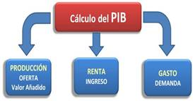
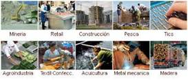
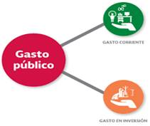

Producto Interno Bruto (PIB) es uno de los indicadores más importantes para comprender la realidad y salud económica de un país. En esa misma línea de importancia, es necesario reconocer que existe una metodología propia para realizar el cálculo de ese gran indicador macroeconómico, en concreto, son conocidos 3 métodos para su cálculo.
|
Comenzaré recordándole que el PIB, es el valor de todos los bienes y servicios finales que produce un país en un periodo específico. El PIB es la medida básica de la actividad económica; de la misma manera que un satélite permite visualizar desde el espacio la situación meteorológica de un continente, así el PIB muestra un panorama general de la situación económica de un país. El PIB se puede medir desde tres puntos de vista 
1. Por el lado de la oferta (Enfoque de la Producción)  2. Por el lado de la retribución de los factores de la producción y la parte que corresponde al gobierno en forma de impuestos (Enfoque del Ingreso). 3. Por el lado de la demanda, analizando de qué forma se utiliza la producción la producción nacional (Enfoque del Gasto). Por cualquiera de las tres formas o métodos del cálculo, el resultado es el mismo. 
A continuación, le describo cada uno de ellos:
¿A dónde puede encontrar los datos para conocer y analizar el PIB? A manera de conclusión, se puede comprender que el PIB es la interpretación real de una economía, que abarca todas las instancias y se convierte en un eje transversal para analizar cualquier toma de decisión al momento de crear una idea empresarial o gerenciar un proyecto. |
Universidad Nacional Autónoma de Honduras
Vicerrectoría Académica
Dirección del Sistema de Estudios de Posgrados
Dirección de Innovación Educativa
Dr. Armando Euceda
Director DSEP
Dra. Martha Leticia Quintanilla
Directora DIE
Msc. Sonia Ramos
DSEP
Ruth Gámez
Karina Carías
Carlos José Pérez Sánchez